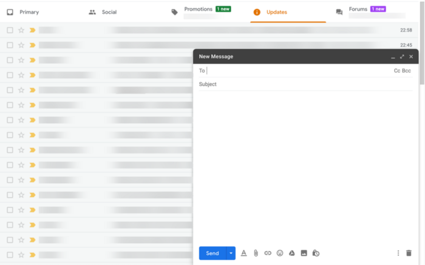
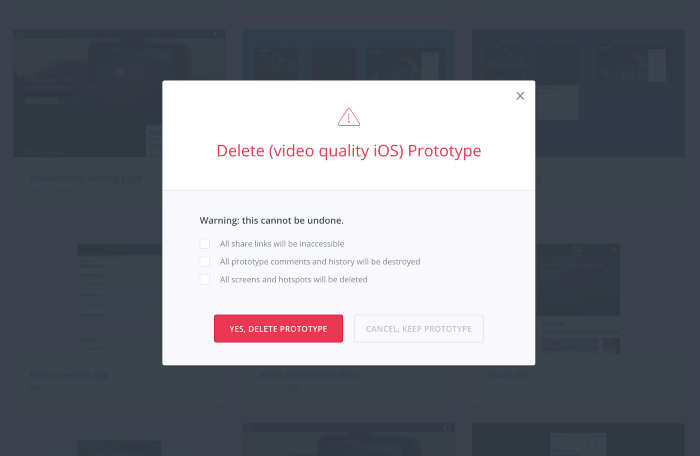
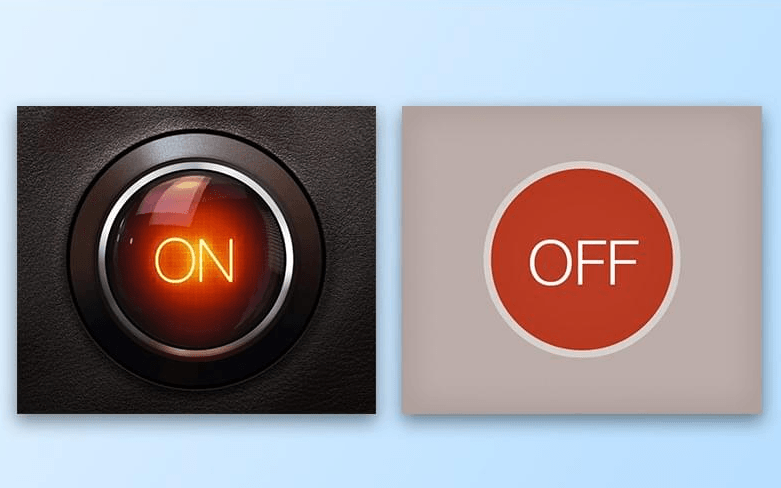
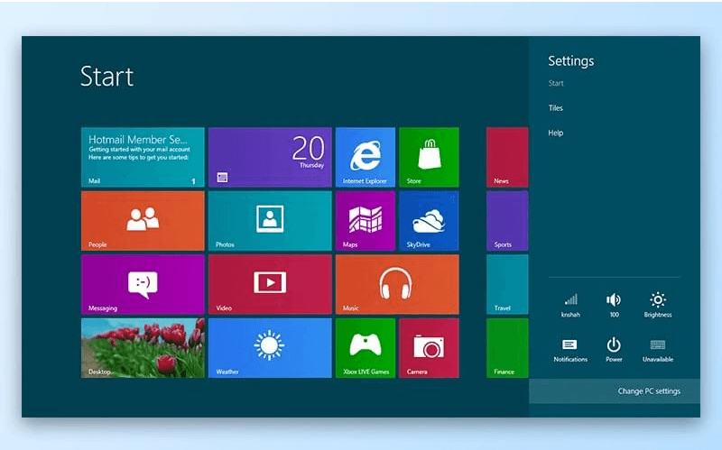
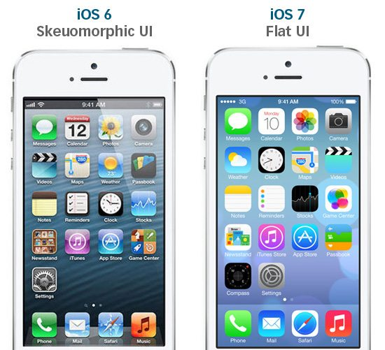
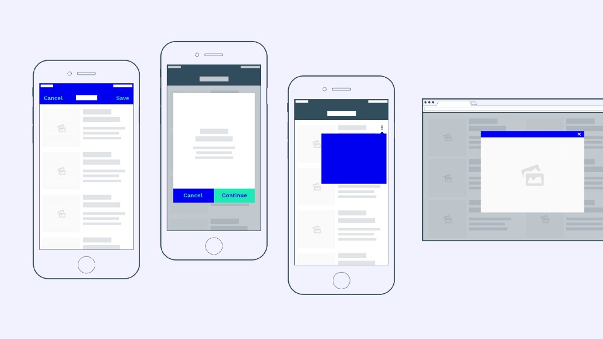
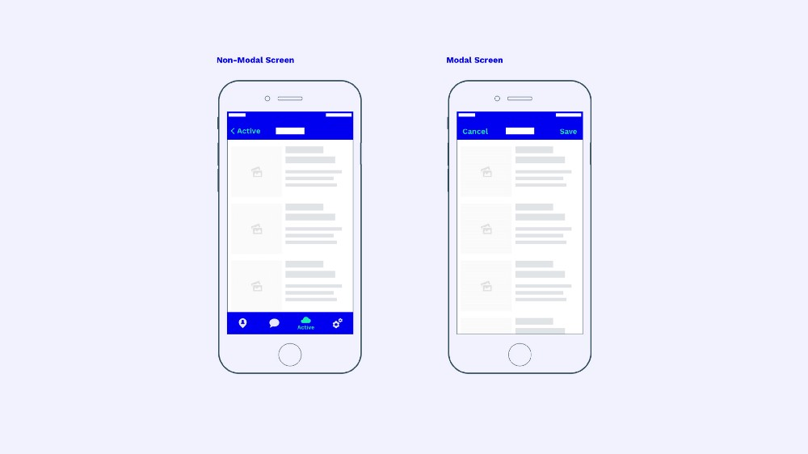

Modality UX Patterns
Overlay definitions
NNGroup definition of a Overlay & Page
- NNGroup - "popup (also known as an overlay or popover)" is a window or dialog that appears on top of the page content with 2 dimensions = Interactivity + Dimmedness
- The key distinction of a "popup" is that it is existing on a layer above the "background content"
- The background content will have the main navigation and is considered the 'page'
General Definitions
- Dialogue: “conversation” between the system and the user
- Mode: A special state of the system in which there is a somewhat different user interface. Each mode may come with different actions
- Overlay: A content box that is displayed on top of (and is noticeably smaller on a Desktop screen) another page
- Scrim/Lightbox: A temporary treatment that can be applied to surfaces for the purpose of making content on the surface less prominent
- Modal: The content on the page is disabled until the user explicitly interacts with the overlay
- Non-modal: Users can still interact with the background content (eg. clicking links or buttons) while the overlay remains visible
Norman-Nielson 2 axis Diagram
- Visual Dimming (up) to None
- Modal to (right) Nonmodal (Greater Interactivity)
Top Left = Non Modal Window
No Dimming & Full Interactivity
Bottom Right = Modal Window
Dimming & No Interactivity with background
General Consensus
"Summary: Whether modal or not, most overlays appear at the wrong time, interrupt users during critical tasks, use poor language, and contribute to user disorientation." - https://www.nngroup.com/articles/popups/
Paradigm shift
Skeuomorphism in UI
- Digital Concepts presented in the UI as solid objects
- The App to access your news is not only called Newsstand but it visually looks like its made out of wood, with shelves to hold news
Problem with Skeuomorphism
This provided benefits to the user in that already learned 'models' can be re-applied instead of new ones having to be learnt. But the Skeuomorphism comes at a cost of;
- work to be done to create the UI
- general visual noise
- download speeds
- generally objectable naffness
- limitation to how digital concepts can developed while tethered to this type of Skeuomorphic representation
The rise of Flat UI
There was an industry move towards a more simple style of representation
Metro
The Metro design of Windows 8 is possibly the best early example of this.
iOS Flat
Apple encountered less of a problem shifting towards a Flat design as they did so in a more incremental manner.
Leverage the Z-Axis
- Altimately though, by abandoning the use of animations, shading, bluring and layering in the goal of the creating Skeuomorphic representation, these elements were freed up to support multidimensionality along the Z-Axis.
- Now the canvas itself can become layered material which grow as needed
Material Design
This is particulary useful when trying to present a large amount of content on a smaller device

Design for smaller screens
We can't support smaller devices unless we embrace the multidimensionality paradigm shift that has happened in iOS Flat and Googles Material Design.
But didn't best practice says use Overlays/Modals sparingly?
Yes, but this was based on the idea that Overlays/Modals interrupt the user’s workflow, divert attention and block important information on the screen.
A well designed overlay of Material presents the workflow, focuses attention on it and prioritises the important information on the screen
The current landscape including smaller device UI design
Types of Screen
Regardless of presentation and appropriateness of use, there are two fundamental types of screens in user interfaces *. These are found on the right and left hand side of the diagram above.
- Non-Modal Screens
- Modal Screens
* - Almost
Non Modal Screens
The most distinct visual indicator for Non-Modal Screens is the visibility of the navigation.
Non-Modal Screens allow users to jump back and forth at the primary navigation level even if they happen to be on a subpage.
Modal Screens
On the other hand, a Modal Screen requires users to close the window before being able to use the primary navigation again (by clicking “Save” or “Cancel” for example). At the least Modal will be dismissed by the act of trying click on the primary level.
Modal Examples
Modal Screens
So Modal Screens aren't limited to the Modal Components found in UI toolkits but rather they are any screen which prevent a User interacting with the lower layer
“creates a mode that disables the main window, but keeps it visible with the modal window as a child window in front of it. Users must interact with the modal window before they can return to the parent application” — Wikipedia.
Modal Screens
Most Modal Screens — especially on desktop applications — can be easily identified, because they visually overlay the main window.
However, screen estate on mobile devices is limited, which is why many modal screens on mobile devices take up the entire screen.
Modals on Mobiles
The clearly distinguishing factor here is the ability to access the main nav on the left screen without any need to Cancel/Save
When to use Modal Screens
Use Modal Screens for self-contained processes, use Non-Modal Screens for everything else.
A “self-contained process” is every action that has a clear start and endpoint to it.
When not to use Modal Screens
“Consider creating a modal context only when it’s critical to get someone’s attention, when a task must be completed or abandoned to continue using the app, or to save important data.”
When to use Modal Screens
In the example above I have suggested the use of a Modal when editing an item but not when you are only viewing the item. Depending on the specific details (gallery items etc.) this may not always be the correct approach.
The most important thing is to recognise a distinction between your modal and non-modal views and try to create a consistant approach that is modular and scalable.
Reclaiming the screen v creating a Modal
In Asana the nav is kept til you get to Task (and then Sub Task) and then is dropped for a 'Task' menu.
In Google Chrome the app was showing a Navigation bar that dissappeared moving from U2 (Navigation bar + Context menu) to War (just Context menu), but I can no longer replicate this functionality and suggests I should have a persistant menu at the bottom (therefore a Tab bar), if I want to use Context menus at the top.
I need to re-visit Apple docs and the work done with this in mind.
THE END
- One ux concept you need to understand
- Tab bars are the new hamburger menus
- www.nngroup.com/articles/hamburger-menus